Noda, Chiba: things to do, food and stays
Noda · Chiba
Noda
Highlighted on the Chiba map.
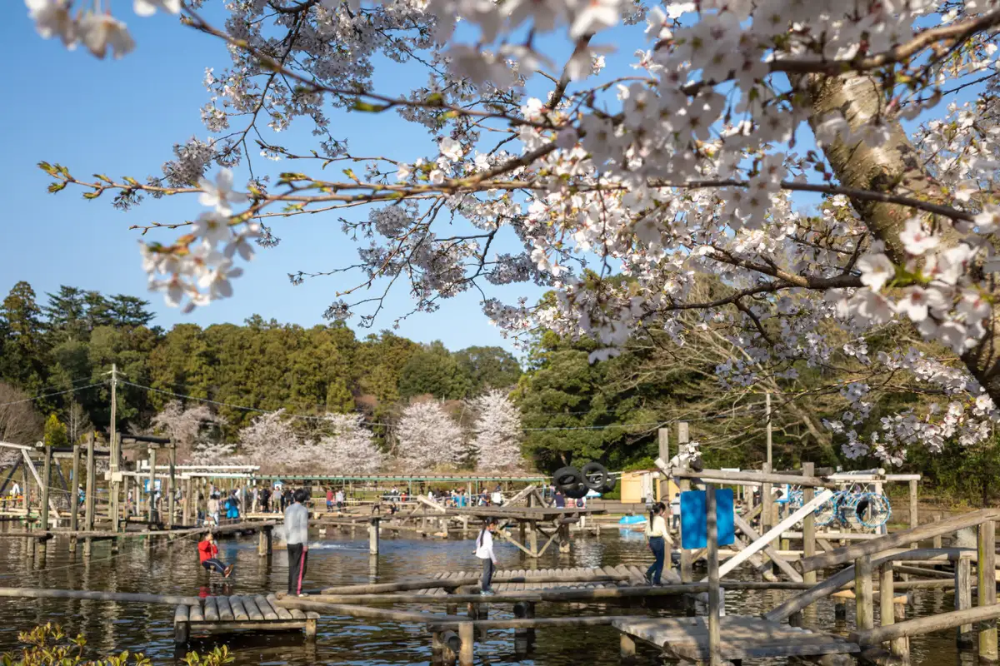
Stay
ホテルルートイン野田 －国道１6号沿ー
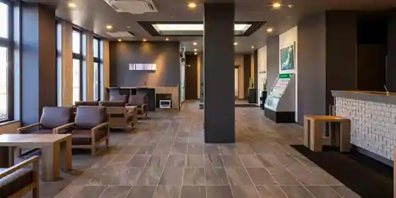
Hotel Route Inn Noda - Kokudo 16 Go Enn
Hotel in Tsuruho, Noda with a large communal bath; 15-minute walk from Atago Station.
ATAGO HOTEL
ATAGO HOTEL
ホテルルートイン野田―国道１６号沿―
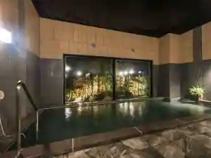
Hotel Route Inn Noda Kokudo 16 Go Enn
Hotel in Tsuruho, Noda with buffet meals and breakfast available.
ビジネス旅館梓
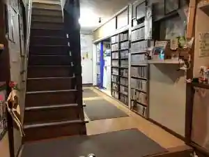
Business Ryokan Azusa
Ryokan inn in Noda with Wi-Fi and business travelers.
ＨＯＴＥＬ Ｒ９ Ｔｈｅ Ｙａｒｄ 野田
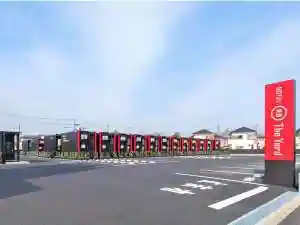
HOTEL R9 The Yard Noda
ビジネスホテル野田
Business Hotel Noda
Hotel in Hanaiichi, Noda with business travelers.
割烹旅館 水明荘
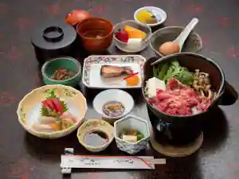
Kappo Ryokan Suimei So
Ryokan inn in Seto, Noda with in-room dining and a large communal bath.
クリアビューゴルフクラブアンドホテル
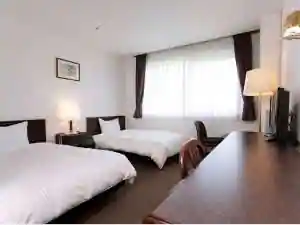
Kuriabyugorufukurabuando Hotel
Hotel in Seto, Noda with parking.
Dining
RUSTIC NOODLES
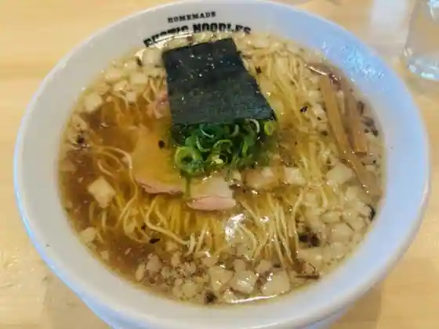
RUSTIC NOODLES
家系ラーメン王道 神道家
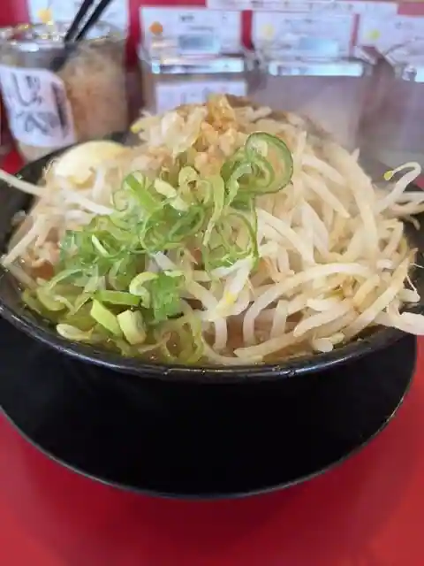
Kakei Ramen Odo Shinto Ie
Handi レストラン
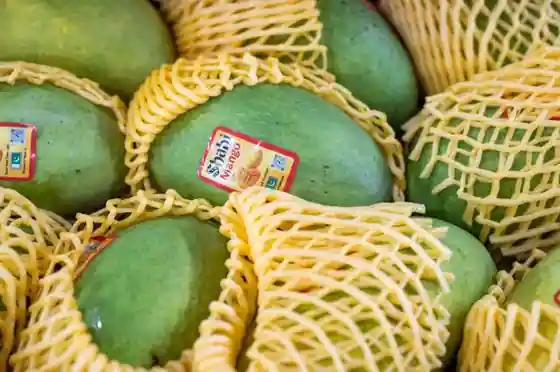
Handi Restaurant
コウジ サンドイッチ
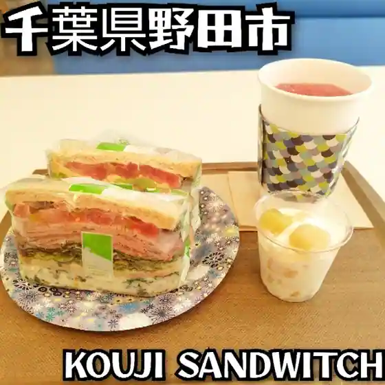
Kouji Sandoitchi
ラーメンショップ 野田店
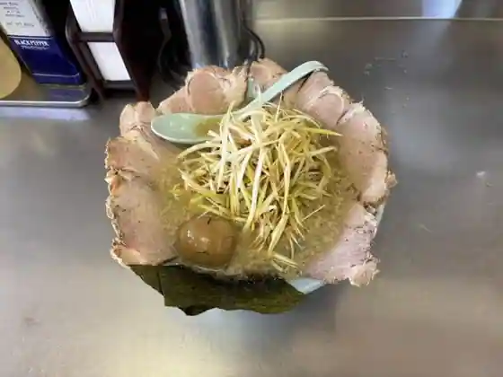
Ramen Shoppu Noda
MENYA TOMOSHIBI
MENYA TOMOSHIBI
旬鮮 酢寿喜
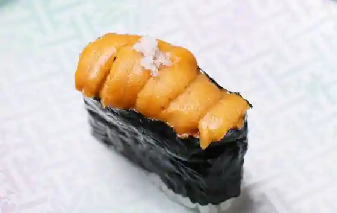
Jun Sen Su Hisashi Ki
ことぶき亭
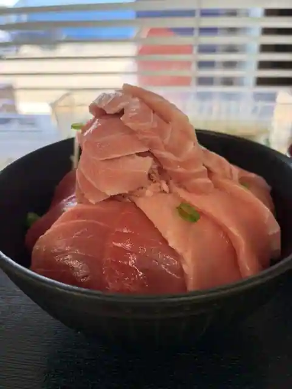
Kotobuki Tei
古奈金
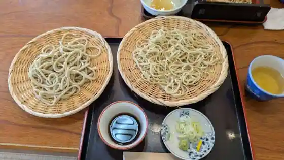
Ko Na Kin
正華楼
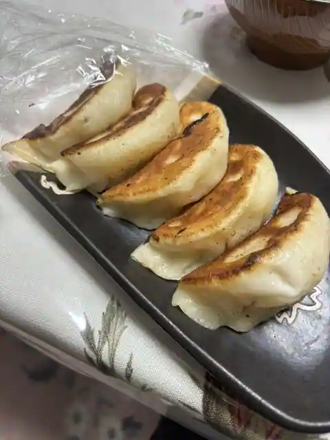
Seika Ro
おさかな食堂 やまと 野田店
Osakana Shokudo Yamato Noda
ビッグシェフ亭 野田店
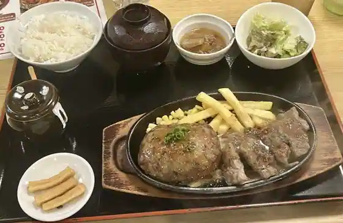
Biggushiefu Tei Noda
アリ インディアン レストラン
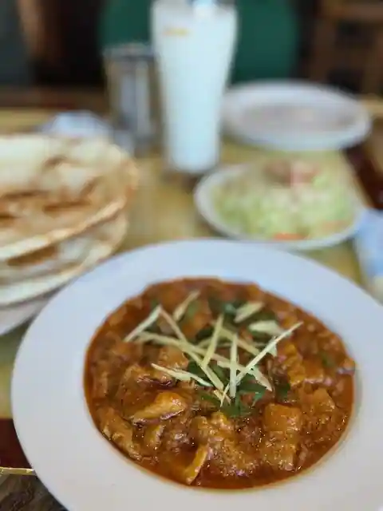
Ari Indian Restaurant
中国食堂シャオ
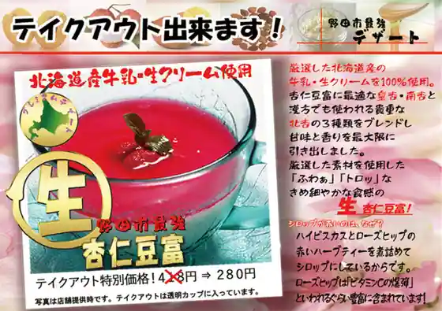
Chugoku Shokudo Shao
盛楽
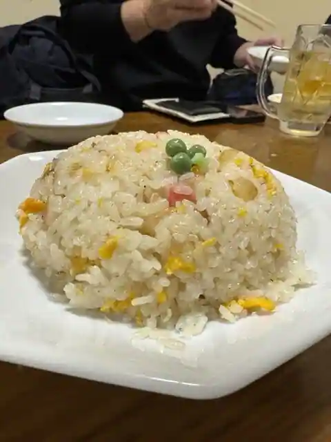
Jo Raku
メヘマーン サラエ
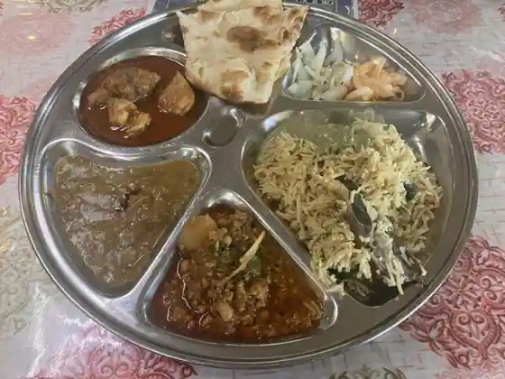
Meheman Sarae
伊澤家
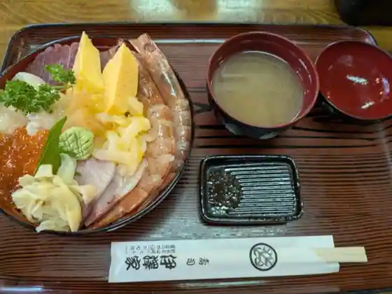
Isawa Ie
菜工房
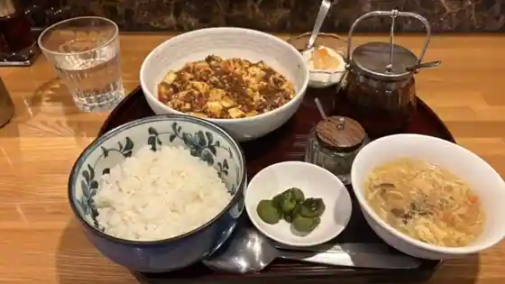
Na Kobo
もちもちの木 野田店
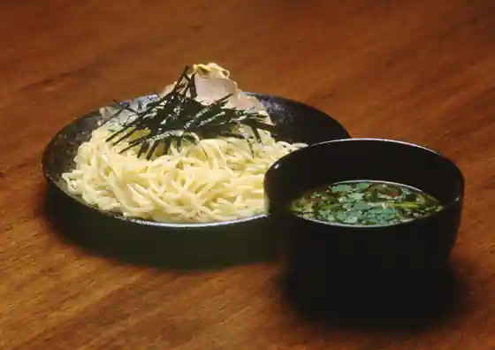
Mochimochino Ki Noda
ラーメンショップ◯化 野田谷津店
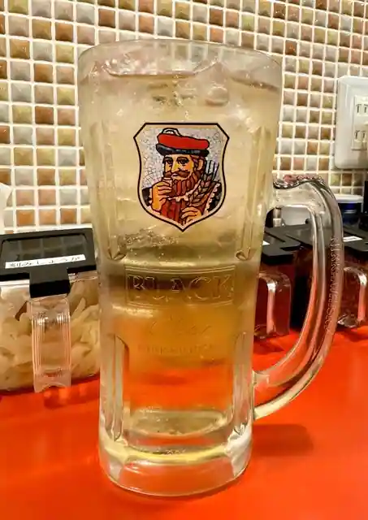
Ramen Shoppu Ka Noda Yatsu
紫あやめ36 あやめ亭
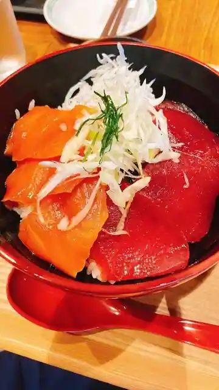
Murasaki Ayame 36 Ayame Tei
天ぷらめし 天之舞
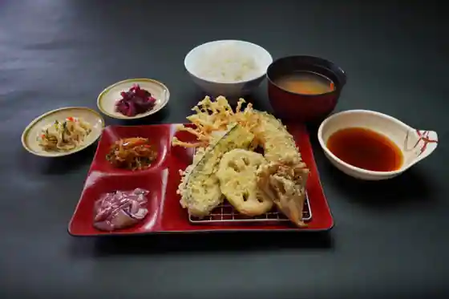
Tenpura Meshi Yuki Mai
二代目 麺屋 こうじ
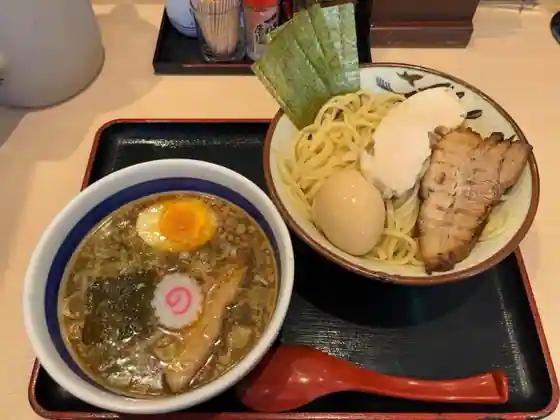
Nidaime Men Ya Koji
きくち
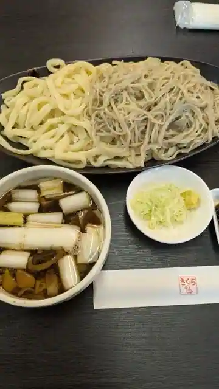
Kikuchi
Sights
Shimizu Park
Gurikopia CHIBA
Chiba Prefectural Sekiyado Shiro Museum
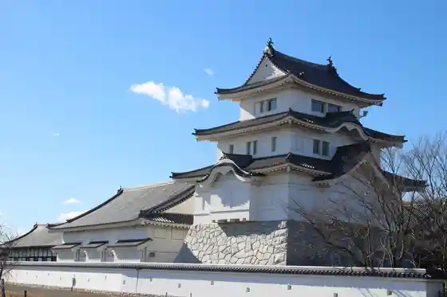
Kisetsu no Hana (Aki Bara) / Shimizu Park
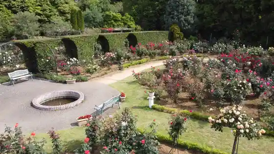
Ko no Tori Village
Koeki Zaidanhojin Honke Kamihanawa Rekishikan
Kikkoman Mo no Shiri Shoyu Kan
Yukijirushi Megumiruku Noda Kojo
Noda Kyodo Museum
Sakuragi Shrine
Noda Nosambutsu Chokubai Tokoro Yumeaguri Noda
Noda Civic Hall (Kyu Motegi Saheiji Tei)
Okikaze Hall
Furutsu Land Kimagase
Kikkoman Goyo Kura
Noda Suzuki Kantaro Memorial Museum
Maru Farm
Sekine Meijin Memorial Museum